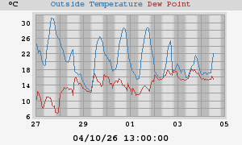
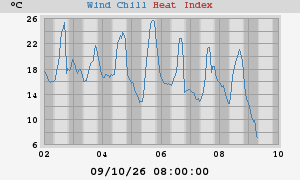
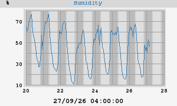
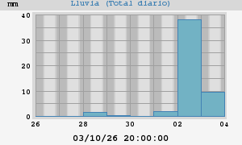
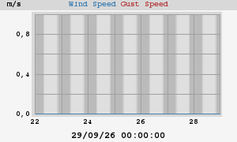
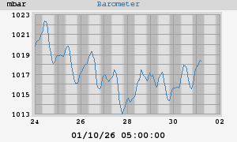
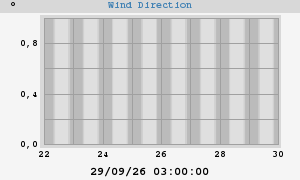
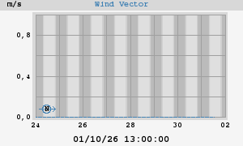

Gráficos y estadísticas semanales








|
Temperatura máxima Temperatura mínima |
29,1°C a las 18:00:34 (jueves) 12,4°C a las 08:08:02 (martes) |
| Menor sensación térmica | 12,4°C a las 08:08:02 (martes) |
|
Humedad máxima Humedad mínima |
97% 05:17:14 (martes) 36% 18:07:58 (jueves) |
|
Punto de rocio máximo Punto de rocio mínimo |
18,5°C 14:10:24 (viernes) 10,5°C 00:01:32 (lunes) |
|
Presión máxima Presión mínima |
1022,9 mbar a las 11:30:02 (viernes) 1014,1 mbar a las 02:28:58 (lunes) |
| Lluvia total | 50,4 mm |
| Máxima tasa de lluvia | 235,2 mm/hr a las 17:59:08 (viernes) |
| Máxima vel. del viento | 0,0 m/s desde N/A a las 00:00:02 (lunes) |
| Viento medio | 0,0 m/s |
|
Vel. máxima del vector Dir. media del vector |
N/A 90° |
|
Temperatura máxima Temperatura mínima |
29,1°C - 01/10/26 18:00:34 15,1°C - 01/10/26 05:58:18 |
| Mínima sensación térmica | 15,1°C - 01/10/26 05:58:18 |
|
Humedad máxima Humedad mínima |
97% - 02/10/26 03:18:04 36% - 01/10/26 18:07:58 |
|
Punto de rocio máximo Punto de rocio mínimo |
18,5°C - 02/10/26 14:10:24 11,1°C - 01/10/26 05:41:22 |
|
Presión máxima Presión mínima |
1022,9 mbar - 02/10/26 11:30:02 1017,1 mbar - 01/10/26 17:29:03 |
| Lluvia total | 48,6 mm |
| Máxima tasa de lluvia | 235,2 mm/hr - 02/10/26 17:59:08 |
| Vel. máxima del viento | 0,0 m/s desde N/A - 01/10/26 00:00:04 |
| Vel. media del viento | 0,0 m/s |
|
Vel. media del vector Dir. media del vector |
N/A 90° |







